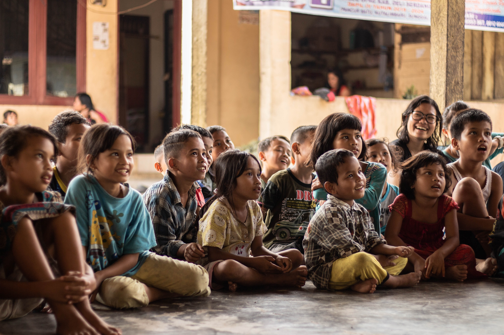

El bajo nivel social , cultural y economico
El bajo nivel socioeconómico y cultural de las familias se presenta como un factor de riesgo
para la resiliencia estudiantil,
puesto que en los hogares los estudiantes no cuentan con material de apoyo para la tarea
escolar. Asimismo, también como un factor de riesgo al interior de las familias, se presenta el
poco conocimiento de las aptitudes y de las dificultades de los hijos en ciertos sectores de
aprendizaje, ya que observamos discrepancias entre la percepción de los padres sobre el
rendimiento de los hijos y la realidad del rendimiento.
Ilustraciones
El bajo nivel escolar de los padres
La baja escolaridad de los padres también constituye un factor de riesgo para el desarrollo de
resiliencia a nivel educativo y está relacionada con
la pobreza, los hábitos de vida y la comunicación lingüística al interior del hogar; involucra
también la baja calidad y la escasez de estrategias de aprendizaje que ayuden a los hijos al
éxito en la escuela. Aunque estos padres valoran la educación, por su baja escolaridad, no
poseen la habilidad para conformar estrategias de aprendizaje en el hogar que apoyen la labor de
los profesores.
Ilustraciones
Hogares con padres a los que pertenecen
alumnos
Otro factor de riesgo familiar que afecta la resiliencia son los hogares conformados por
una madre o un padre a los
que pertenecen algunos alumnos, la deficiente atención en clases, la falta de motivación para
estudiar, la conducta inapropiada en el aula, poca o nula responsabilidad en las tareas
tareas y carencia de hábitos de estudio, constituyen factores de riesgo en muchos de los
estudiantes.
Ilustraciones
